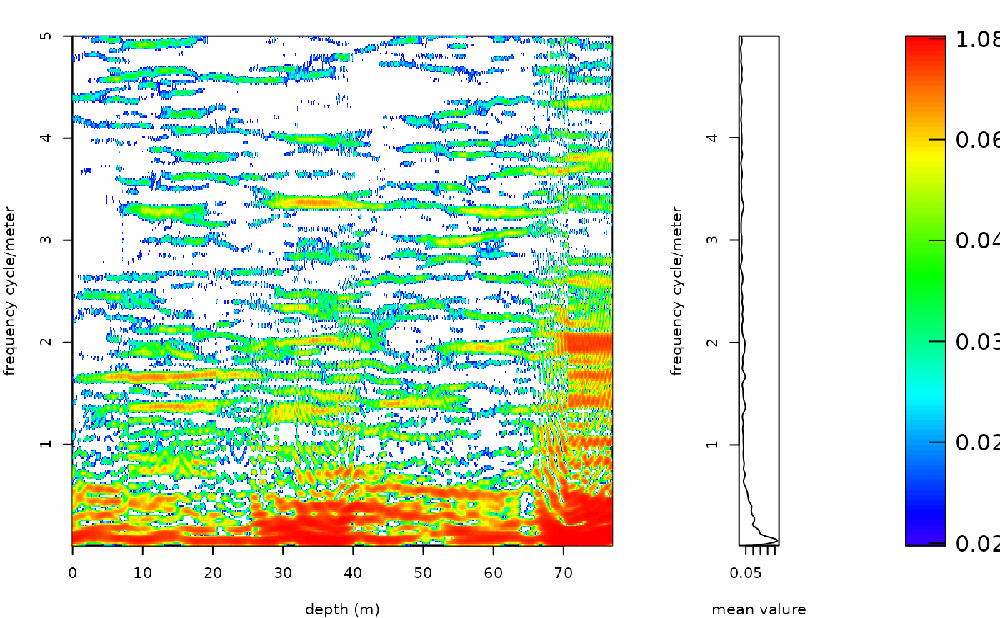

The plot_win_fft function allows for the (re)plotting of the results of the win_fft
Usage
plot_win_fft(
win_fft = NULL,
x_lab = c("depth (m)"),
y_lab = c("frequency cycle/metre"),
plot_res = 1,
perc_vis = 0,
freq_max = NULL,
freq_min = NULL,
keep_editable = FALSE,
palette_name = "viridis",
color_brewer = "viridis",
plot_horizontal = TRUE,
dev_new = wr_dev_new_default(),
colour_brewer = NULL
)Arguments
- win_fft
Result of the windowed FFT (required): the list returned by
win_fft.Default=NULL.- x_lab
Label of the depth/time axis (character).
Default="depth (m)".- y_lab
Label of the frequency axis (character).
Default="frequency cycle/metre".- plot_res
Which matrix of
win_fftto plot, given as its position in the list (integer, 1 to 9):1: amplitude (
Amplitude_mat),2: power (
Power_mat),3: phase (
Phase_mat),4: frequency uncertainty (
uncer_mat),5: AR1 confidence level in % (
AR1_CL_mat),6: AR1 red-noise fit (
AR1_Fit_mat),7: AR1 90% confidence power (
AR1_90_power_mat),8: AR1 95% confidence power (
AR1_95_power_mat),9: AR1 99% confidence power (
AR1_99_power_mat).
Default=1.- perc_vis
Lower quantile of the colour scale (numeric, between 0 and 1): the colour breaks run from this quantile of the plotted values to the maximum, and values below it are left blank, which hides the background.
0colours all values.Default=0.- freq_max
Highest frequency plotted, in cycles per depth/time unit (numeric, or
NULLfor the highest frequency ofwin_fft).Default=NULL.- freq_min
Lowest frequency plotted, in cycles per depth/time unit (numeric, or
NULLfor the lowest frequency ofwin_fft).Default=NULL.- keep_editable
Keep the graphical parameters (
par, layout) of the plot after the function returns, so that extra elements can be added to the plot afterwards (logical). WithFALSEthe previous graphical parameters are restored on exit.Default=FALSE.- palette_name
Name of the colour palette of the power (colour) scale, a character string. Which names are valid depends on
color_brewer:color_brewer = "grDevices":"rainbow","heat.colors","terrain.colors","topo.colors","cm.colors", or any of the 115hcl.colorspalettes (list them withgrDevices::hcl.pals()), for example"viridis","Plasma","Inferno","YlOrRd","Spectral","Blue-Red","Zissou 1".color_brewer = "viridis":"viridis","magma","inferno","plasma","cividis","rocket","mako","turbo".color_brewer = "RColorBrewer":"BrBG","PiYG","PRGn","PuOr","RdBu","RdGy","RdYlBu","RdYlGn","Spectral","Accent","Dark2","Paired","Pastel1","Pastel2","Set1","Set2","Set3","Blues","BuGn","BuPu","GnBu","Greens","Greys","Oranges","OrRd","PuBu","PuBuGn","PuRd","Purples","RdPu","Reds","YlGn","YlGnBu","YlOrBr","YlOrRd"(also listed bywr_brewer_palettes()).color_brewer = "colorRamps":"blue2green","blue2green2red","blue2red","blue2yellow","cyan2yellow","green2red","magenta2green","matlab.like","matlab.like2","ygobb".color_brewer = "scico"(all except"batlowK"need the scico package):"acton","bam","bamako","bamO","batlow","batlowK","batlowW","berlin","bilbao","broc","brocO","buda","bukavu","cork","corkO","davos","devon","fes","glasgow","grayC","hawaii","imola","lajolla","lapaz","lipari","lisbon","managua","navia","nuuk","oleron","oslo","roma","romaO","tofino","tokyo","turku","vanimo","vik","vikO".
Low power is drawn with the first colour of the palette and high power with the last.
Default="viridis".- color_brewer
Palette family from which
palette_nameis taken, a character string:"grDevices","viridis","RColorBrewer","colorRamps"or"scico"(the last one, except for"batlowK", needs the scico package). Seepalette_namefor the palette names of each family.Default="viridis".- plot_horizontal
Orientation of the plot (logical):
TRUEputs depth/time on the x-axis and frequency on the y-axis, with the mean spectrum to the left;FALSEdraws depth/time on the y-axis and frequency on the x-axis, with the mean spectrum on top.Default=TRUE.- dev_new
Open a new plotting window for the plot. The wavelet plots contain a raster image that needs more room than the small RStudio plot pane, which gives "figure margins too large" errors or clipped text, so a separate window is opened by default in the RStudio GUI. In every other front end (plain R, ESS, Positron, knitr, Rscript) the plot is drawn on the current device and no window is opened. Set TRUE or FALSE to force either behaviour, or set
options(waverider.dev_new = TRUE/FALSE). Logical.Default=wr_dev_new_default(): TRUE in the RStudio GUI, FALSE elsewhere.- colour_brewer
British spelling of
color_brewer, with the same options; if given (notNULL) it overridescolor_brewer.Default=NULL.
Value
Returns a plot of, which plot 1 of 8 options, option 1: Amplitude matrix option 2: Power matrix option 3: Phase matrix option 4: AR1_CL matrix option 5: AR1_Fit matrix option 6: AR1_90_power matrix option 7: AR1_95_power matrix option 8: AR1_99_power matrix
Examples
# \donttest{
#Conduct a windowed fft on the magnetic susceptibility record \cr
# of the Sullivan core of Pas et al., (2018).
mag_win_fft <- win_fft(data= mag,
padfac = 5,
window_size = 12.5,
run_multicore = FALSE,
genplot = FALSE,
palette_name = "rainbow",
color_brewer="grDevices",
x_lab = c("depth (m)"),
y_lab = c("frequency cycle/meter"),
plot_res = 1,
perc_vis = 0.5,
freq_max = 5,
freq_min = 0.001,
keep_editable=FALSE,
verbose=FALSE)
# Plot the amplitude spectra
plot_win_fft(win_fft= mag_win_fft,
x_lab = c("depth (m)"),
y_lab = c("frequency cycle/meter"),
plot_res = 1,
perc_vis = 0.5,
freq_max = 5,
freq_min = 0.001,
keep_editable=FALSE,
palette_name = "rainbow",
color_brewer="grDevices",
plot_horizontal=TRUE,
dev_new=TRUE)

# }